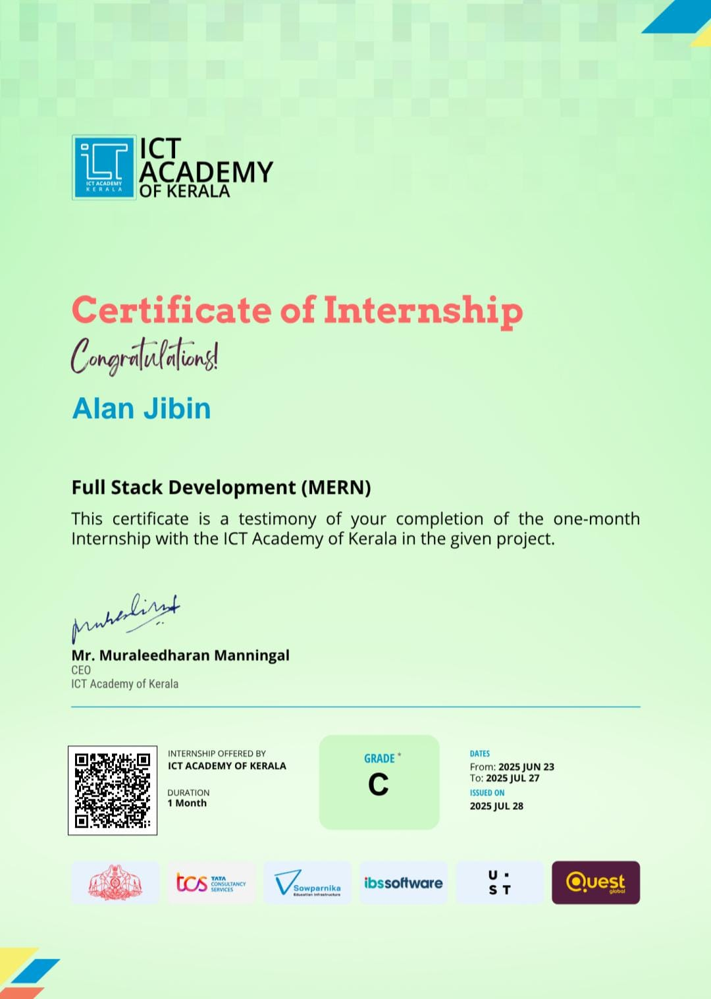

Automated Metal Defect Detection.
A deep learning approach using camera vision and YOLO architecture to identify manufacturing flaws in real-time.
Python / Deep Learning
Read more →
A deep learning approach using camera vision and YOLO architecture to identify manufacturing flaws in real-time.
Python / Deep Learning
Read more →

Translating hand gestures into text and speech using flex sensors, IMUs, and an ESP32 microcontroller.
C / Embedded Systems
Read more →

A one-month intensive internship with the ICT Academy of Kerala focusing on building scalable web applications using MongoDB, Express, React, and Node.js.
Successfully completed the final assessment validating fundamental cybersecurity principles, demonstrating a commitment to industry-standard security practices.